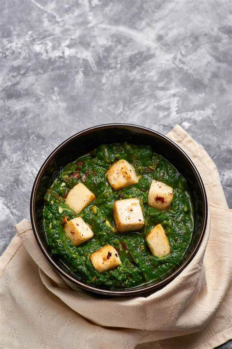

Palak Paneer (Indian spinach curry with tofu)

Description :
Palak paneer is an Indian dish consisting of paneer (a type of cheese) in a thick paste made from puréed spinach, called
palak in Hindi, Marathi, Gujarati, and other Indian languages. The terms palak paneer and saag paneer are sometimes used
interchangeably in restaurants in the Anglosphere.
However, saag paneer is different from traditional palak paneer in
that it contains other green leafy vegetables, such as mustard greens, whereas palak paneer only contains spinach
Ingredients :
- 3 tablespoons vegetable oil, divided
- 2 cups chopped fresh spinach
- 1 teaspoon ground cumin
- ¾ cup chopped onion
- 2 green chile peppers, chopped
- 2 teaspoons chopped garlic
- 2 tomatoes, chopped
- ½ cup water
- 2 teaspoons ground coriander
- 1 teaspoon ground red chiles
- 2 tablespoons salt
- 8 ounces paneer, cubed
Steps :
-
Heat 1 tablespoon vegetable oil in a skillet over medium heat; cook and stir spinach in hot oil until softened, 3 to 4 minutes.
-
Transfer spinach to a blender or food processor; puree until spinach becomes a coarse paste.
-
Heat remaining 1 tablespoon oil in a saucepan over medium heat; cook cumin in hot oil until fragrant, about 30 seconds.
Add onion, green chile peppers, and garlic.
-
Cook and stir until onion is tender, 3 to 4 minutes. Stir in tomatoes and cover saucepan.
-
Simmer for 1 minute and add blended spinach paste, water, ground coriander, red chile powder, and salt.
-
Continue to cook until heated through, 2 to 3 minutes.
-
Stir paneer into spinach mixture and simmer until hot, 1 to 2 minutes more.